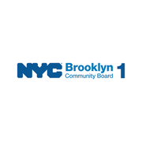
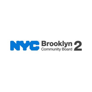
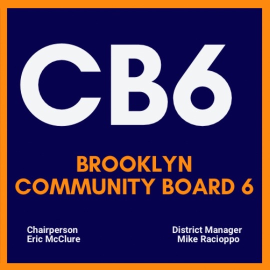
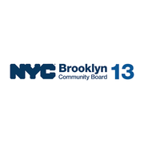

Where they serve
 City Council
City Council State Assembly
State Assembly State Senate
State Senate Congress
Congress Subway
Subway Citi Bike
Citi Bike NYC Ferry
NYC FerryTurn layers on and off. Tap an official's logo or a board's seal for its page. Zoning and land use lot by lot are on the land use map.
About
Antonio Reynoso is the Borough President of Brooklyn, elected by every voter in the borough.
The office appoints the members of all 18 community boards in Brooklyn together with the council members, reviews every land use application that comes through the borough, and allocates borough capital funding.
First elected in 2021 and sworn in January 2022. Citywide and borough offices carry four year terms and are limited to two consecutive terms.
Next on the ballot in November 2029, when the seat will be open: Borough President Reynoso is term limited and cannot run again. For the election in front of us, see where you vote in November 2026 or what is coming up on the calendar.
Appoints community board members with the council members, reviews land use applications, and allocates borough capital funding.
Brooklyn in numbers
Across the boards: $2,472 in BKCB11 to $5,034 in BKCB1.


U.S. Census Bureau, American Community Survey 2019-2023 5-year estimates. Unemployment: U.S. Bureau of Labor Statistics via FRED, Federal Reserve Bank of St. Louis, series NYKING7URN, Aug 2026.
Contact
209 Joralemon Street
209 Joralemon Street, Brooklyn, NY 11201
Overlap
Community boards











Bars show how many of the district's election districts fall in each board.